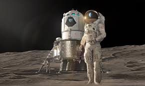
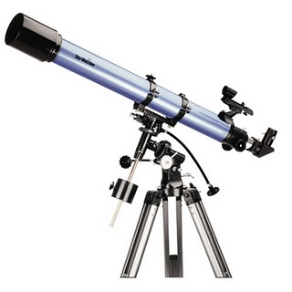

Space exploration is the ongoing discovery and exploration of celestial structures in outer space by means of continuously evolving and growing space technology. While the study of space is carried out mainly by astronomers with telescopes, the physical exploration of space is conducted both by unmanned robotic probes and human spaceflight. While the observation of objects in space, known as astronomy, predates reliable recorded history, it was the development of large and relatively efficient rockets during the early 20th century that allowed physical space exploration to become a reality. Common rationales for exploring space include advancing scientific research, uniting different nations, ensuring the future survival of humanity and developing military and strategic advantages against other countries. Space exploration has often been used as a proxy competition for geopolitical rivalries such as the Cold War. The early era of space exploration was driven by a “Space Race” between the Soviet Union and the United States, the launch of the first man-made object to orbit the Earth, the USSR’s Sputnik 1, on 4 October 1957, and the first Moon landing by the American Apollo 11 craft on 20 July 1969 are often taken as landmarks for this initial period. The Soviet space program achieved many of the first milestones, including the first living being in orbit in 1957, the first human spaceflight (Yuri Gagarin aboard Vostok 1) in 1961, the first spacewalk (by Aleksei Leonov) on 18 March 1965, the first automatic landing on another celestial body in 1966, and the launch of the first space station (Salyut 1) in 1971. After the first 20 years of exploration, focus shifted from one-off flights to renewable hardware, such as the Space Shuttle program, and from competition to cooperation as with the International Space Station (ISS). With the substantial completion of the ISS following STS-133 in March 2011, plans for space exploration by the USA remain in flux. Constellation, a Bush Administration program for a return to the Moon by 2020 was judged inadequately funded and unrealistic by an expert review panel reporting in 2009. The Obama Administration proposed a revision of Constellation in 2010 to focus on the development of the capability for crewed missions beyond low earth orbit (LEO), envisioning extending the operation of the ISS beyond 2020, transferring the development of launch vehicles for human crews from NASA to the private sector, and developing technology to enable missions to beyond LEO, such as Earth/Moon L1, the Moon, Earth/Sun L2, near-earth asteroids, and Phobos or Mars orbit. As of March 2011, the US Senate and House of Representatives are still working towards a compromise NASA funding bill, which will probably terminate Constellation and fund development of a heavy lift launch vehicle (HLLV). In the 2000s, the People’s Republic of China initiated a successful manned spaceflight program, while the European Union, Japan, and India have also planned future manned space missions. China, Russia, Japan, and India have advocated manned missions to the Moon during the 21st century, while the European Union has advocated manned missions to both the Moon and Mars during the 21st century.
Space exploration is the use of astronomy and space technology to explore outer space.[1] While the study of space is carried out mainly by astronomers with telescopes, its physical exploration though is conducted both by unmanned robotic space probes and human spaceflight. While the observation of objects in space, known as astronomy, predates reliable recorded history, it was the development of large and relatively efficient rockets during the mid-twentieth century that allowed physical space exploration to become a reality. Common rationales for exploring space include advancing scientific research, national prestige, uniting different nations, ensuring the future survival of humanity, and developing military and strategic advantages against other countries.[2] Space exploration has often been used as a proxy competition for geopolitical rivalries such as the Cold War. The early era of space exploration was driven by a "Space Race" between the Soviet Union and the United States. The launch of the first human-made object to orbit Earth, the Soviet Union's Sputnik 1, on 4 October 1957, and the first Moon landing by the American Apollo 11 mission on 20 July 1969 are often taken as landmarks for this initial period. The Soviet space program achieved many of the first milestones, including the first living being in orbit in 1957, the first human spaceflight (Yuri Gagarin aboard Vostok 1) in 1961, the first spacewalk (by Alexei Leonov) on 18 March 1965, the first automatic landing on another celestial body in 1966, and the launch of the first space station (Salyut 1) in 1971. After the first 20 years of exploration, focus shifted from one-off flights to renewable hardware, such as the Space Shuttle program, and from competition to cooperation as with the International Space Station (ISS). With the substantial completion of the ISS[3] following STS-133 in March 2011, plans for space exploration by the U.S. remain in flux. Constellation, a Bush Administration program for a return to the Moon by 2020[4] was judged inadequately funded and unrealistic by an expert review panel reporting in 2009.[5] The Obama Administration proposed a revision of Constellation in 2010 to focus on the development of the capability for crewed missions beyond low Earth orbit (LEO), envisioning extending the operation of the ISS beyond 2020, transferring the development of launch vehicles for human crews from NASA to the private sector, and developing technology to enable missions to beyond LEO, such as Earth–Moon L1, the Moon, Earth–Sun L2, near-Earth asteroids, and Phobos or Mars orbit. In the 2000s, the People's Republic of China initiated a successful manned spaceflight program, while the European Union, Japan, and India have also planned future crewed space missions. China, Russia, Japan, and India have advocated crewed missions to the Moon during the 21st century, while the European Union has advocated manned missions to both the Moon and Mars during the 20th and 21st century. From the 1990s onwards, private interests began promoting space tourism and then public space exploration of the Moon
nylon It is composed of a pressure bladder of urethane-coated nylon. A restraining layer of Dacron and an outer thermal garment composed of Neoprene-coated nylon. It also has five layers of aluminized Mylar and a fabric surface layer composed of Teflon, Kevlar, and Nomex.
Search Results Featured snippet from the web A telescope is an instrument that is used to view distant objects. If you want to look at the planets, you can use a telescope. The higher the magnification on the telescope, the better your view will be.
